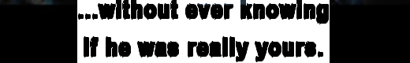
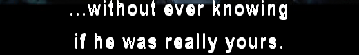
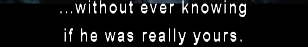
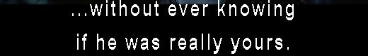

|
transcode provides a filter plugin filter_extsub.so for elementary DVD
subtitle rendering in connection with -x vob. Use it with
|
transcode [...] -J extsub=<options> |
The option string looks as follows (all options default to 0):
- s subtitle track id (0-31)
Use tcprobe -H N with N>1 to find out
if subtitle any packs are available in the program stream.
- h offset of subtitle with respect to bottom
of frame in rows.
Subtitles are placed at the bottom of the
frame. Try this option to shift them up or down.
- t global display start time correction
in msec.
If you feel, subtitles are displayed not timely,
adjust it with this option. This will affect all subtitles.
- f fast rendering, i.e., no anti-aliasing (0=off,1=on).
Anti-aliasing of the font is performed by
default. Switch it of (1) if your font is tiny
and messed up by this feature.
- w render on post-processing (0=off,
1=on).
Setting this option to 1 will render the
subtitle on post-processing instead of pre-processing.
This may improve subtitle quality but makes no
sense after extensive resizing of the frame.
- a graylevel value a (0-255).
- b graylevel value b (0-255).
Make another subtitle color visible with full
intensity equal to 255. May lead to fatter fonts.
- p assign subtitle color p [0-3] to
graylevel value a.
- q assign subtitle color q [0-3] to graylevel value b.
Shuffle the color assignment by choosing another
subtitle color between 0 and 3. Useful for black fonts on white background.
Example (1) changing color assignment:
-
this one looks not as expected without any further options.

-
|
-J extsub=0:0:0:0:0:0:0:1:2
|
shuffle the font color assignment
using 1:2 looks like this, but has an ugly 3D effect.

-
|
-J extsub=0:0:0:0:0:0:0:1:3
|
shuffle the color assignment using 1:3 looks better,
but shows white shadows that make the font fatter but blurry

-
|
-J extsub=0:0:0:0:0:0:0:2:3
|
shuffle the color assignment using 2:3 seems to be perfect.
Nice and smooth looking letters.

-
|
-J extsub=0:0:0:1:0:0:0:2:3
|
for comparison, we switch off anti-aliasing, see the difference?

Example (2) adding another white color:
-
this one looks already perfect without any options.
-
same as above with-out ant-aliasing.
-
|
-J extsub=0:0:0:0:0:0:255
|
We make switch another color to full intensity (white) to
make the subtitle appear fatter, maybe too much.
-
|
-J extsub=0:0:0:1:0:0:255
|
The above fat one without anti-aliasing.
|